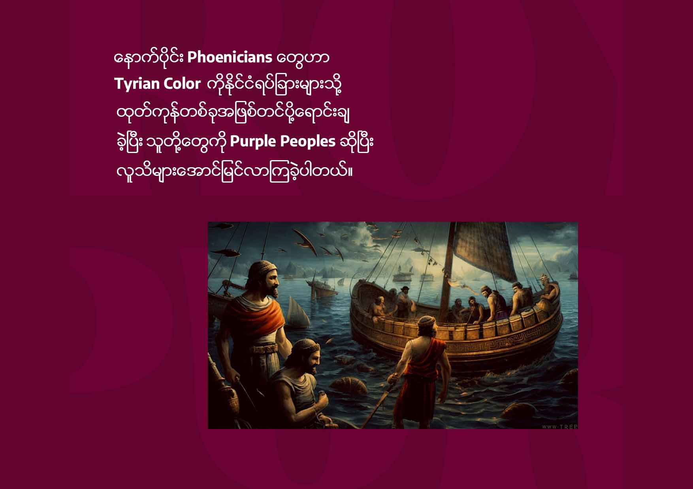
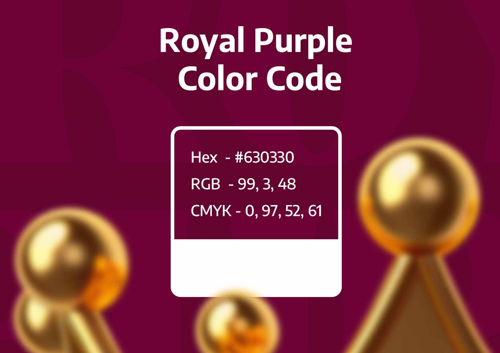

ဒီနေ့ကတော့ Royal purple အကြောင်းအရာလေးကို ဗဟုသုတအဖြစ် မျှ၀ယ်ပေးချင်ပါတယ်။

Tyrian Color,
Royal Purple or Imperial Purple ကို Murex Shellfish လို့ခေါ်တဲ့ပင်လယ်ခရုကောင်ကနေရှိတာဖြစ်ပါတယ်။
ဒီအရောင်ကိုစတင်ထုတ်ယူခဲ့တဲ့နေရာကတော့ Tyre ဆိုတဲ့ မြို့လေးကနေပါပဲ။ ကြေးခတ် (ကျောက်ခေတ်နဲ့သံခေတ်ကြား)တုန်းက Phoenicians လို့ခေါ်တွင်တဲ့လူမျိုးတွေဖြစ်ကြပါတယ်။
ဒီမြို့ကနေ အရောင်ထုတ်ယူဖို့အတွက် ပင်လယ်ခရုကောင်တွေကို အများအပြား စုဆောင်းခဲ့ကြပါတယ်။
ဒီအရောင်ကိုထုတ်ယူရတာခက်ခဲတဲ့အတွက် စျေးအရမ်းကြီးပါတယ်။ ဒါ့အပြင်အတုအပတွေမရှိအောင်လဲ သူတို့တွေအတတ်နိုင်ဆုံးကာကွယ်ခဲ့ကြပါသေးတယ်။

နောက်ပိုင်း Phoenicians တွေဟာ Tyrian Color ကိုနိုင်ငံရပ်ခြားများသို့ ထုတ်ကုန်တစ်ခုအဖြစ်တင်ပို့ရောင်းချခဲ့ပြီး သူတို့တွေကို Purple People ဆိုပြီး လူသိများအောင်မြင်လာခဲ့ကြပါတယ်။
Royal Purple Color Code
Hex - #630330
RGB - (99, 3, 48)
CMYK - (0, 97, 52, 61)
အားလုံးပဲ အဆင်ပြေကြပါစေ။